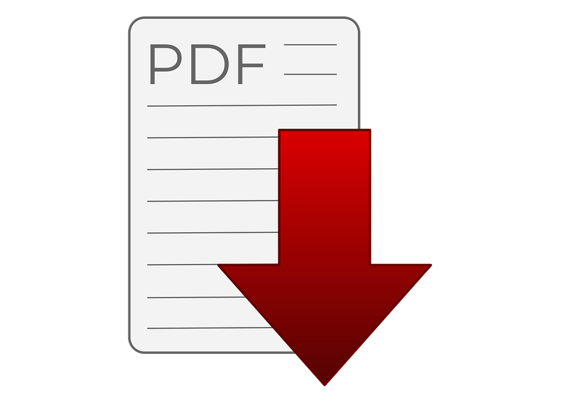

--Curriculum Vitae--
Riwayat Pribadi:
Saya adalah mahasiswi S1- Sistem Informasi Kelautan,
yang diajarkan untuk mengolah data atau informasi dengan bantuan perangkat lunak.
Dapat bekerja dalam tim, dan suka dalam bidang perencanaan.
Data Pibadi:
- Nama : Tri Yanti
- TTL : Cirebon, 4 Oktober 2001
- Agama : Islam
- Alamat : Ds. Karangasem Plumbon Cirebon
Riwayat Pendidikan:
- Strata-1: Sistem Informasi Kelautan UPI Kampus Serang
2020-sekarang
- SMA : SMAN 1 Sumber
2017-2020
- SMP : SMPN 1 Plumbon
2014-2017
- SD : SDN 2 Karangasem
2008-2014
Contact me at:
- Wa : 082318134935
- Ig : @triyanti___
- e-mail : triyantii2000@gmail.com
Preview curriculum vitae:
Get my curriculum vitae:
